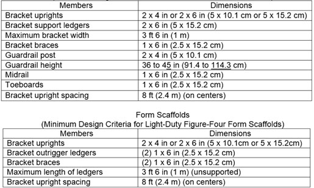

22.G Form and Carpenter's Bracket Scaffolding
22.G.01–22.G.15
22.G.01 Scaffolds shall be constructed of wood, steel, or aluminum members with known strength characteristics and be designed to support a minimum load of 25 lbs/ft2 (1.054 kg/m2).
22.G.02 No more than two persons shall occupy any given 8 ft (2.4 m) span of a bracket scaffold at any one time. Tools and materials shall not exceed 75 lbs (34 kg) in addition to person(s) occupying the area.
22.G.03 A guardrail or other form of fall protection is required for all open edges when a fall of 6 ft or greater exists (1.8 m) or, when other hazards exist below the platform.
22.G.04 Figure-four scaffolds shall be constructed as follows:
- Spacing shall be not more than 8 ft (2.4 m) on centers and scaffold shall be constructed from sound lumber.
- The bracket ledger shall consist of two pieces of 1-in x 6-in (2.5-cm x 15.2-cm) or heavier material nailed on opposite sides of the vertical form support. Ledgers shall project not more than 3 ½ ft (1 m) from the outside of the form support and shall be braced and secured to prevent tipping or turning.
- The knee or angle brace shall intersect the ledger at least 3 ft (.9 m) from the form at an angle of approximately 45 degrees, and the lower end shall be nailed to a vertical support.
- The platform shall consist of two or more scaffold planks that extend at least 6 in (15.2 cm) beyond the ledgers at each end unless secured to the ledgers. When planks are secured to the ledgers (nailed or bolted) a wood filler strip shall be used between the ledgers. Unsupported projecting ends of planks shall be limited to an overhang of 12 in (30 cm).
- The maximum permissible spans for planking shall be in conformance with ANSI A10.8 and be consistent with allowable bearer loads.
22.G.05 Metal brackets or scaffold jacks that are an integral part of the form shall be securely bolted or welded to the form. Folding-type brackets shall be either bolted or secured with a locking-type pin when extended for use.
22.G.06 Clip-on or hook-over brackets may be used on form work provided the form walers are bolted to the form or secured by snap ties or tie-bolts extending through the form and securely anchored. In addition, carpenter bracket scaffolds may be attached by:
- A bolt extending through to the opposite side of the structural wall;
- A metal stud attachment device;
- Welding; or
- Hooking over a secured structural supporting member.
22.G.07 Metal brackets shall be spaced not more than 8 ft (2.4 m) on centers.
22.G.08 Scaffold planks shall be either bolted to the metal brackets or be of such length that they overlap the brackets at each end by at least 6 in (15.2 cm). Unsupported projecting ends of scaffold planks shall be limited to a maximum overhang of 12 in (30.4 cm).
22.G.09 The maximum permissible spans for planking shall be consistent with allowable bearer loads.
22.G.10 Folding-type metal brackets, when extended for use, shall be either bolted or secured with a locking-type pin.
22.G.11 Wooden bracket form scaffolds shall be designed in accordance with Table 22-1 and shall be an integral part of the form panel.
22.G.12 Brackets shall consist of a triangular shaped frame made of wood with a cross-section not less than 2-in x 3-in (5-cm x 7.6-cm) or of 1-1/4-in x 1-1/4-in x 1/8-in (3.1-cm x 3.1-cm x 0.3-cm) structural angle iron.
22.G.13 The minimum design for wooden scaffolds criteria shall be in accordance with Table 22-1.
22.G.14 Scaffold planks shall be either nailed or bolted to the runners or be of such length that they overlap the ledgers at each end by at least 6 in (15.2 cm). Unsupported projecting ends of scaffold planks shall be limited to a maximum overhang of 12 in (30.4 cm).
22.G.15 The maximum permissible spans for planking shall be consistent with allowable bearer loads.
TABLE 22-1
Form Scaffolds
(Minimum Design Criteria for Wooden Bracket Form Scaffolds)

{kind=link}